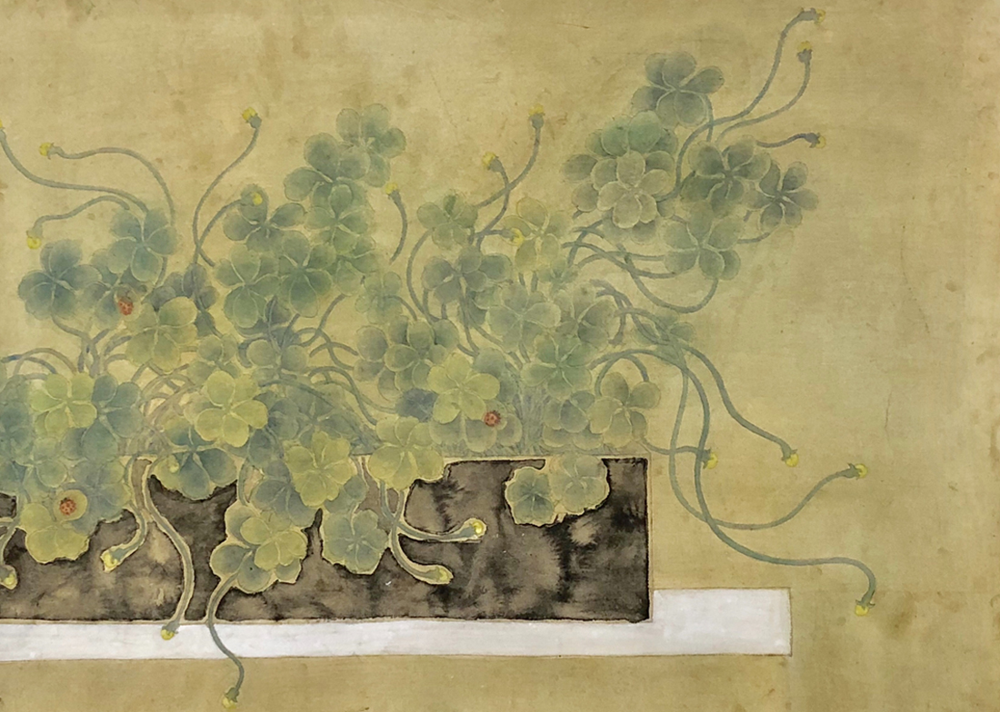

EDUCATION
Xiamen University Xiamen, China
Art college, Chinese painting, MFA Sep 2016 – Jul 2019
Main course :•Academic writing, Contemporary cultural theory and artistic trend of thought
• GPA: 3.77/4
• Awarded ：2019 Xiamen University merit students
2018 The 8th Fujian Biennial Exhibition of Fujian Province (Award)
Jimei University
Art and Design education college, Fine art, BA
Main course: Chinese art history , foreign art history, art theory
• GPA: 3.33/4
• Awarded：2016 Jimei University Outstanding graduates &Excellent graduation work
2013 Jimei University First-class scholarship
RESEARCH FIELD AND PROGRAM
Research field
Chinese paintings（transition and contemporary), the mobility of art,silk road, intangible cultural heritage
Research projects
1.The survival crisis of “Yong Chun paper weaving painting ”-- The analysis of survival gene of intangible cultural heritage handicraft
May2020-Sep2020
2.Sales of hybrid sexual cultural commodities -- An analysis of MAKARA pattern transformation in Changsha porcelain of "Black Stone”
May2020-Sep2020
3.Purple empowerment ---------The political skills of Roman merchants over the Indian Ocean trade
Mar2020-May2020
4.The transformation of traditional Chinese painting in urban environment
Nov2018-May2019
EXTRACURRICULAR ACTIVITIES
2019 Peking University International Doctoral Academic Forum Beijing China
Academic exchange meeting of doctoral students of art history from well-known Aug 2019-Sep2019
universitiesat home and abroad (participator)
Xiamen ---Italian art exchange exhibition in2016 La Spezia,Italy
Participant, translator Aug2016– Aug2016
• Invited to participate in an Xiamen --Italian art exchange exhibition with my artwork
• As a translator for Chinese and Italian artists, I try to promote the artistic and cultural exchanges between the two sides
• Introduce and pass on Chinese traditional culture and Chinese painting and calligraphy art to foreign artists visit museums and galleries in different Italian cities to learn about local art collections and the handicraft
Translater for foreign academic exchange artists Xiamen, China
They come from the United States,UK,Holland,Spain,Italy Sep2013 -Present
• Assist at lease 10 foreign teachers and students who come to school for art academic exchanges
• Assist to hold “ China-Holland Contemporary Arts Exhibition 2014 Xiamen.”exchange exhibition
• Assist to hold “ External to each other--- Chinese and American watercolor painters” exchange exhibition
• Assist to hold at lease 3 time foreign artists art academic lectures
• Introduce and pass on Chinese traditional art culture, Chinese painting, and Chinese calligraphyto them
WORK EXPERIENCE
Xuezan education Inc. Xiamen, China
On line teaching, art history Jun 2019 – Dec2019
• Teach art history coursesonline Over 100hours，Helped more than 100 students study art history
Youth art training school Xiamen, China
Chinses painting , art history and art theory Jun 2017 – Dec 2018
Teaching Chinese painting skills and aesthetic for over150 adults
JIMEI high schoolXiamen, China
art history and art theory Sep2015– Dec 2015
• Teaching high school art course (virtuosity）for high school,Guide them how to artistic appreciation
JIMEI Universty Xiamen, China
The Philippines roots project of student of foreign citizen of Chinese originAug2013-Dec2015
• Teaching 300 oversea Chineses students Chinese painting skills and introduce Chinese traditional culture to them
• Introduce students to Fujianart, and Fujian non-heritage projects.
ADDITIONAL INFORMATION
Interests and skills
Painting: 19 years of painting. Chinese Painting ， seal cutting ，woodcut，wood block ，Chinese Calligraphy.
Moive:10 years of movie used to learn film appreciation course in college
2012 Jimei University Creative Microfilm Competition(Best Creative Award) director&scriptwriter
https://v.youku.com/v_show/id_XNTYyNjkyNDY4.html
Costume design :Design and make clothes
2013 Jimei University T-stage fashion design Competition （Final Quality） costume designer
Ancient painting repair :
2 years of repair ancient paintings given by alumni. basic ancient painting restoration work.

Wait.No1

Wait.No2
Languages
Fluent English, Fluent Mandarin